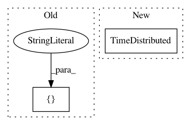

a07c82b9886d1d3fd58908c6109c4d2096760824,pyannote/audio/labeling/models.py,LSTMSequenceLabeling,design_model,#LSTMSequenceLabeling#Any#,260
Before Change
model.compile(optimizer=self.optimizer,
loss="categorical_crossentropy",
metrics=["accuracy"])
return model
After Change
name="dense_{i:d}".format(i=i)))(x)
// one dimension per class
outputs = TimeDistributed(Dense(self.output_dim, activation="softmax"))(x)
return Model(input=inputs, output=outputs)
In pattern: SUPERPATTERN
Frequency: 3
Non-data size: 2
Instances
Project Name: pyannote/pyannote-audio
Commit Name: a07c82b9886d1d3fd58908c6109c4d2096760824
Time: 2016-08-29
Author: bredin@limsi.fr
File Name: pyannote/audio/labeling/models.py
Class Name: LSTMSequenceLabeling
Method Name: design_model
Project Name: keras-team/keras
Commit Name: 534f6b7975dcd334f6d68eef14598d75c79e7921
Time: 2016-08-28
Author: francois.chollet@gmail.com
File Name: tests/test_model_saving.py
Class Name:
Method Name: test_sequential_model_saving
Project Name: allenai/allennlp
Commit Name: 700abc65fd2172a2c6809dd9b72cf50fc2407772
Time: 2020-02-03
Author: mattg@allenai.org
File Name: allennlp/models/srl_bert.py
Class Name: SrlBert
Method Name: __init__